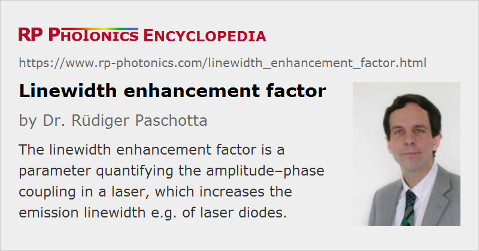

Linewidth Enhancement Factor
Definition: a parameter quantifying the amplitude–phase coupling in a laser
Alternative term: Henry factor
Categories: lasers, physical foundations
Formula symbol: α
Units: (dimensionless)
How to cite the article; suggest additional literature
Author: Dr. Rüdiger Paschotta
Essentially due to noise from spontaneous emission into the resonator modes, a free-running (not stabilized) single-frequency laser has a certain finite linewidth. For simple cases, this fundamental limit for the linewidth was calculated by Schawlow and Townes even before the first laser was experimentally demonstrated. Whereas this limit was later shown to be closely approached by a number of solid-state lasers, significantly higher linewidth values were measured for semiconductor lasers (laser diodes) even when the influence of technical noise was very low. It was then later found by Henry [1] that the increased linewidths result from a coupling between intensity and phase noise, caused by a dependence of the refractive index on the carrier density in the semiconductor. Henry introduced the linewidth enhancement factor α (also called Henry factor or alpha factor) to quantify this amplitude–phase coupling mechanism; essentially, α is a proportionality factor relating phase changes to changes of the gain:
(The factor 1/2 serves to convert the change of power gain Δ g to the change of amplitude gain.) Henry then found that the linewidth of the laser should be increased by the factor (1 + α2), which turned out to be in reasonable agreement with experimental data.
It is possible to calculate the α factor of a semiconductor for a given carrier density from a band structure model, although this is not easy. For typical quantum wells, one often obtains values of the order to 2 to 5.
Quantum dot lasers are different from other semiconductor lasers (e.g. based on quantum wells) in terms of α factor. Simple models suggest a very small α factor, but different values are obtained experimentally – sometimes even negative values. This can be understood by taking into account the carriers not only of the quantum dots themselves, but also in the wetting layer. There are also various other subtle effects [6, 7].
Four-level solid-state lasers usually have a very small linewidth enhancement factor when operated near their gain maximum. Larger values are obtained when forcing operation at other wavelengths and for quasi-three-level gain media.
Apart from increasing the laser linewidth in continuous-wave operation, a non-zero linewidth enhancement factor also causes a chirp when e.g. a laser is power modulated, or when an intense optical pulse passes an amplifier which it saturates.
Surprisingly, the amplitude–phase coupling related to the linewidth enhancement factor can under certain circumstances (with frequency-dependent loss) be used to reduce the linewidth even below the Schawlow–Townes limit [4, 5].
There are different methods for the measurement of the linewidth enhancement factor. Most common are those based on recording the optical spectrum of ASE for different excitation levels, on measuring amplitude and phase modulation caused by a modulated drive current, pump–probe measurements, and linewidth measurements.
Questions and Comments from Users
Here you can submit questions and comments. As far as they get accepted by the author, they will appear above this paragraph together with the author’s answer. The author will decide on acceptance based on certain criteria. Essentially, the issue must be of sufficiently broad interest.
Please do not enter personal data here; we would otherwise delete it soon. (See also our privacy declaration.) If you wish to receive personal feedback or consultancy from the author, please contact him e.g. via e-mail.
By submitting the information, you give your consent to the potential publication of your inputs on our website according to our rules. (If you later retract your consent, we will delete those inputs.) As your inputs are first reviewed by the author, they may be published with some delay.
Bibliography
| [1] | C. H. Henry, “Theory of the linewidth of semiconductor lasers”, IEEE J. Quantum Electron. 18 (2), 259 (1982), doi:10.1109/JQE.1982.1071522 |
| [2] | C. H. Henry, “Theory of spontaneous emission noise in open resonators and its application to lasers and optical amplifiers”, J. Lightwave Technol. LT-4, 288 (1986) |
| [3] | M. Osinski and J. Buus, “Linewidth broadening factor in semiconductor lasers – an overview”, IEEE J. Quantum Electron. 23 (1), 9 (1987), doi:10.1109/JQE.1987.1073204 |
| [4] | A. Yariv et al., “Self-quenching of fundamental phase and amplitude noise in semiconductor lasers with dispersive loss”, Opt. Lett. 15 (23), 1359 (1990), doi:10.1364/OL.15.001359 |
| [5] | Y. Shevy and H. Deng, “Frequency-stable and ultranarrow-linewidth semiconductor laser locked directly to an atom-cesium transition”, Opt. Lett. 23 (6), 472 (1998), doi:10.1364/OL.23.000472 |
| [6] | S. Melnik et al., “The linewidth enhancement factor α of quantum dot semiconductor lasers”, Opt. Express 14 (7), 2950 (2006), doi:10.1364/OE.14.002950 |
| [7] | J. Molina Vázquez et al., “Linewidth enhancement factor of quantum-dot optical amplifiers”, IEEE J. Quantum Electron. 42 (10), 986 (2006), doi:10.1109/JQE.2006.881022 |
| [8] | T. Fordell and A. M. Lindberg, “Experiments on the linewidth-enhancement factor for a vertical-cavity surface-emitting laser”, IEEE J. Quantum Electron. 43 (1), 6 (2007), doi:10.1109/JQE.2006.884583 |
| [9] | S. Gerhard et al., “Frequency-dependent linewidth enhancement factor of quantum-dot lasers”, IEEE Photon. Technol. Lett. 20 (20), 1736 (2008), doi:10.1109/LPT.2008.2004675 |
| [10] | R. Pagano et al., “Above threshold estimation of alpha (Henry) parameter in stripe lasers using near- and far-field intensity measurements”, IEEE J. Quantum Electron. 47 (4), 439 (2011), doi:10.1109/JQE.2010.2091255 |
| [11] | A. Consoli et al., “Self-validating technique for the measurement of the linewidth enhancement factor in semiconductor lasers”, Opt. Express 20 (5), 4979 (2012), doi:10.1364/OE.20.004979 |
See also: linewidth, Schawlow–Townes linewidth, semiconductor lasers, laser diodes, chirp
and other articles in the categories lasers, physical foundations
|  |
If you like this page, please share the link with your friends and colleagues, e.g. via social media:
These sharing buttons are implemented in a privacy-friendly way!